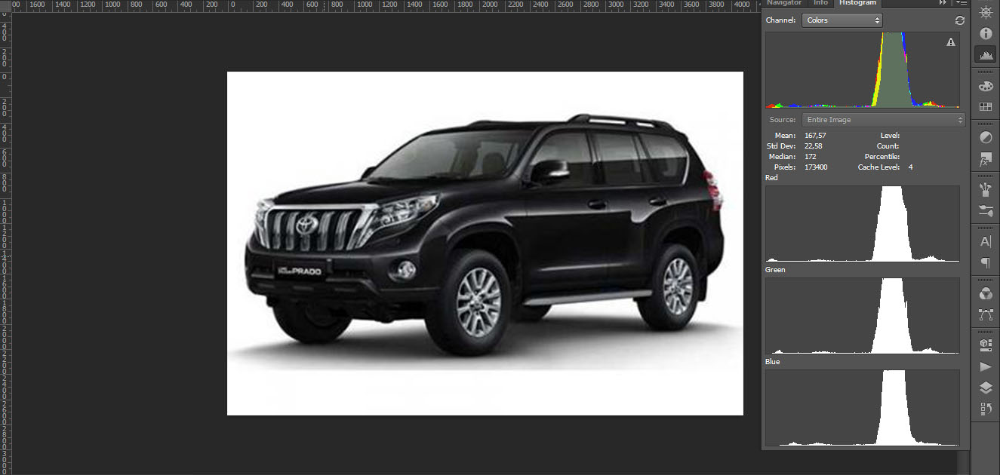
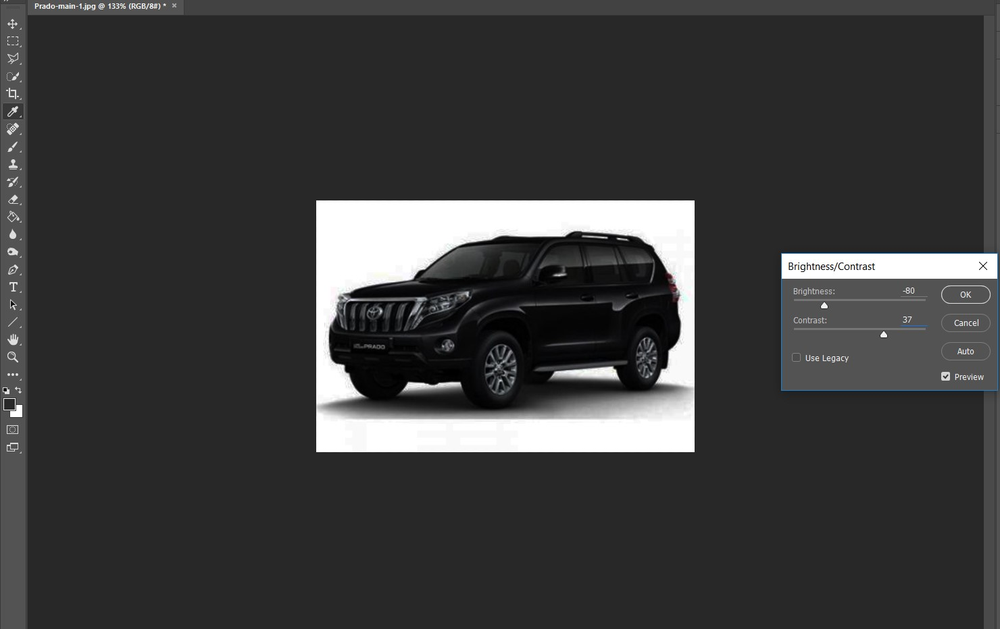
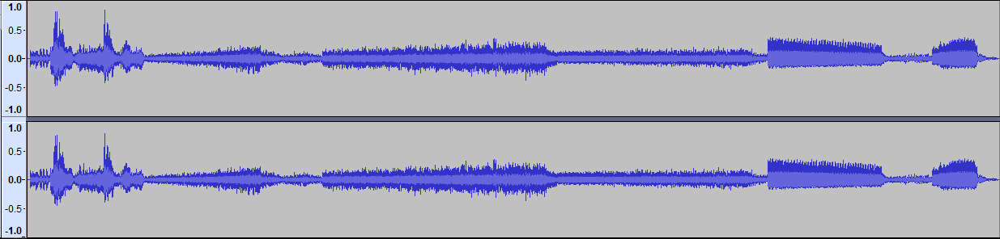
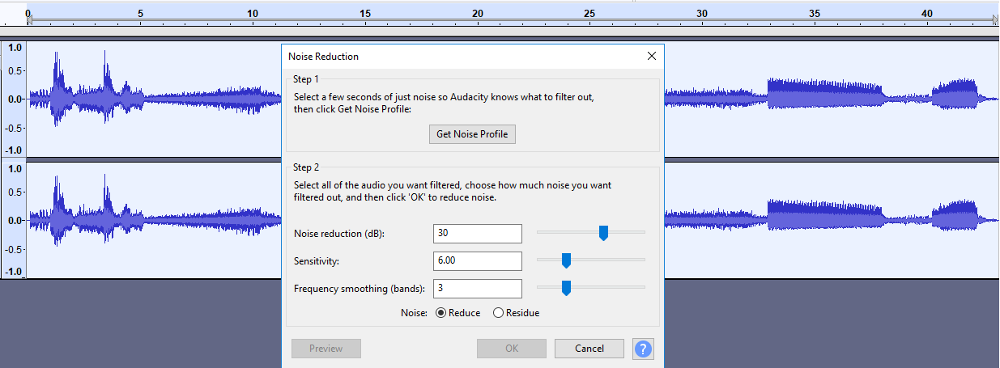
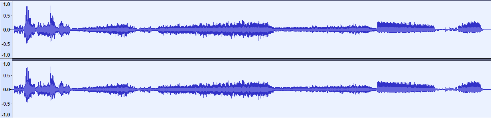

- Laborator 1
- Laborator 2
- Laborator 3
- Laborator 4
1. Procesare text, scanare și recunoaștere texte, tabele, imagini.
Recunoașterea Optică a Caracterelor (engleză Optical character recognition), abreviată și OCR, reprezintă translatarea mecanică sau electronică a imaginilor cu scris de mână, tipărit sau printat (de obicei scanat) în text editabil. OCR este un domeniu de cercetare în recunoașterea modelelor, inteligența artificială și vederea mecanică. Recunoașterea optică a caracterelor (folosind metode optice ca oglinzi și lentile) și recunoașterea digitală a caracterelor (folosind scanere și algoritmi pe calculator) au fost, inițial, considerate domenii diferite. Deoarece puține aplicații folosesc tehnici optice, termenul OCR include și procesarea digitală a documentelor. Programele inițiale necesitau învățarea caracterelor (exemple ale fiecărui caracter) pentru a identifica un font specific. Astăzi există programe „inteligente” care au un grad mai mare de acuratețe, putând identifica majoritatea fonturilor. Unele programe sunt chiar capabile de a aranja textul pe coloane, imaginile și elementele non-textuale în pagină aproape identic cu sursa originală.
Pentru recunoastere textului in documentele digitizate, a fost folosita aplicatia ABBY Fine Reader , ce permite detectatrea si digitizarea textelor tabelelor din imagini , si doumente pdf.
Procesand documenteul dat, rezultatul a fost inarcat in bufferul de schimb , care poate fi savlat , fiind lipit in un document in formatul dorit.
Mai jos e reprezentat rezultatul convertarii documentului pdf.
2. Procesatea imaginilor digitale
O imagine digitală este o reprezentare a unei imagini reale bidimensionale (imagine în "2D" sau două dimensiuni), ca o mulțime finită de valori digitale (numerice), codificate după un anumit sistem. Dacă a fost produsă printr-un procedeu fotografic se mai numește și fotografie digitală. Imaginile digitale pot fi produse și plecând de la imagini tradiționale, analogice, prin digitalizare. Acestea imagini analogice se împart mai întâi în numeroase elemente infime ca suprafață numite pixeli, și anume sub formă de raster grafic sau hartă de tip raster, fiecare pixel primind (având) două coordonate plane. Apoi caracteristicile de luminozitate și culoare ale fiecărui pixel, eventual împreună cu coordonatele sale (dacă acestea nu sunt implicite), sunt codificate conform mai multor sisteme, rezultatul final al acestei digitalizări fiind un șir de numere care sunt memorate cu ajutorul calculatoarelor.
Editarea imaginii a fost efectata cu ajutorul soft-ului Photoshop CC 2015
Mai jos gasim atasata imaginea originiala, ce nu a suportat nici o schimbare:
Inca mai jos putem gasi operatiile ce au fost efectuate cu imaginea data , si anume:
-
Culoarea imaginii:

- Historigrama imagiinii: 
- Modificarea contrastului imaginii: 
-
Identificarea colturilor:

-
Identificarea conturului obiectelor:

Procesarea sunetului
Din punct de vedere fizic, sunetul are o definiție mai largă, el nefiind legat de senzația auditivă: orice perturbație (energie mecanică) propagată printr-un mediu material sub forma unei unde se numește sunet. În această definiție se includ și vibrații la frecvențe din afara domeniului de sensibilitate al urechii: infrasunete (sub 20 Hz) și ultrasunete (peste 20 kHz). Sunetul constituie din punct de vedere fiziologic senzația produsă asupra organului auditiv de către vibrațiile materiale ale corpurilor și transmise pe calea undelor acustice.
In cadrul laboratorului dat, a fost folosita aplicatia Audacity pentru editarea sunetului. A fost aleasa anume aceasta aplicatie, fiind cu o interfata simpla si intuitiva, dar avand in acelasi timp o sumedenie de posibilitati ce pot fi folosite de catre utilizator. Mai jos gasiti sunetul original:
Acum vom incerca sa editam sunetul, limitand distorsiunile:
Iata sunetul final:
Diferenta de volum ocupat e aproape in jumatate:
- Original : 1018 kb
- Final : 661kb;
Procesare video
Video este tehnologia de captare, înregistrare, procesare, depozitare, transmitere și reconstrucție electronică a unei secvențe de imagini reprezentând scene în mișcare. Pentru laboratorul curent , a fost folosit softul filmora 9 .Acest soft are un set restris de instrumete, dar are o interfata foarte intuitiva si ne permite sa accesam gratis functionalul de baza. Materialele folosite pentru crearea acestui video, sunt imaginile prelucrate in Photoshop, cateva secvente de video, si cateva secvente de text.

Rezultatul prelucrarii acestora este mai jos: